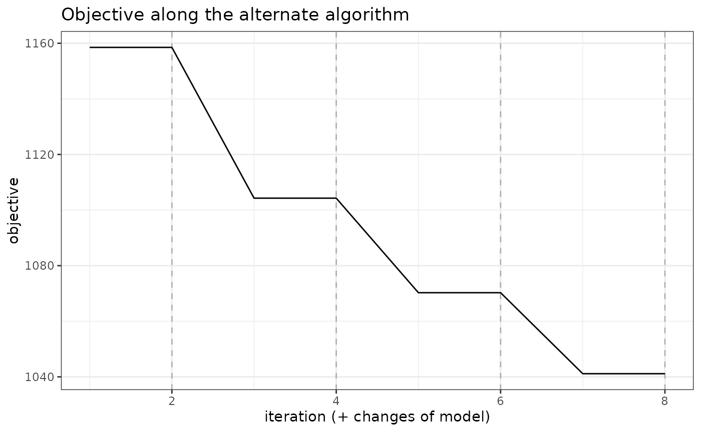

Clustering of multivariate count data with PLN-mixture
PLN team
2021-02-16
Source:vignettes/PLNmixture.Rmd
PLNmixture.RmdPreliminaries
This vignette illustrates the standard use of the PLNmixture function and the methods accompanying the R6 Classes PLNmixturefamily and PLNmixturefit.
Requirements
The packages required for the analysis are PLNmodels plus some others for data manipulation and representation:
Data set
We illustrate our point with the trichoptera data set, a full description of which can be found in the corresponding vignette. Data preparation is also detailed in the specific vignette.
data(trichoptera)
trichoptera <- prepare_data(trichoptera$Abundance, trichoptera$Covariate)The trichoptera data frame stores a matrix of counts (trichoptera$Abundance), a matrix of offsets (trichoptera$Offset) and some vectors of covariates (trichoptera$Wind, trichoptera$Temperature, etc.)
Mathematical background
PLN-mixture for multivariate count data is a variant of the Poisson Lognormal model of Aitchison and Ho (1989) (see the PLN vignette as a reminder) which can be viewed as a PLN model with an additional layer to the model by assuming that the latent observations found in the first layer are drawn from a mixture of \(K\) multivariate Gaussian components. Each component \(k\) have a prior probability \(p(i \in k) = \pi_k\) such that \(\sum_k \pi_k = 1\). We denote by \(C_i\in \{1,\dots,K\}\) the multinomial variable \(\mathcal{M}(1,\matr{\pi} = (\pi_1,\dots,\pi_K))\) describing the component of observation \(i\). Introducing this additional layer, our PLN mixture model is as follows \[\begin{equation} \begin{array}{rcl} \text{layer 2 (clustering)} & \mathbf{C}_i \sim \mathcal{M}(1,\boldsymbol{\pi}) \\ \text{layer 1 (Gaussian)} & \mathbf{Z}_i | \, \mathbf{C}_i = k \sim \mathcal{N}({\boldsymbol\mu}^{(k)}, {\boldsymbol\Sigma}^{(k)}),, \\ \text{observation space } & Y_{ij} | Z_{ij} \quad \text{indep.} & \mathbf{Y}_i | \mathbf{Z}_i\sim\mathcal{P}\left(\exp\{\mathbf{Z}_i\}\right). \end{array} \end{equation}\]
Covariates and offsets
Just like PLN, PLN-mixture generalizes to a formulation where the main effect is due to a linear combination of \(d\) covariates \(\mathbf{x}_i\) and to a vector \(\mathbf{o}_i\) of \(p\) offsets in sample \(i\) in each mixture component. The latent layer then reads \[\begin{equation} \mathbf{Z}_i | \mathbf{C}_i = k \, \sim \mathcal{N}({\mathbf{o}_i + \mathbf{x}_i^{\top{\boldsymbol\Theta}} + \boldsymbol\mu}^{(k)} + ,{\boldsymbol\Sigma}^{(k)}), \end{equation}\] where each \({\boldsymbol\Theta}\) is a \(d\times p\) matrix of regression parameters common to all the mixture components.
Parametrization of the covariance of the mixture models
When using parametric mixture models like Gaussian mixture models, it is generally not recommended to have covariances matrices \({\boldsymbol\Sigma}^{(k)}\) with no special restriction, especially when dealing with a large number of variables. Indeed, the total number of parameters to estimate in the model can become prohibitive.
To reduce the computational burden and avoid over-fitting two different, more constrained parametrizations of the covariance matrices of each component are currently implemented in the package (on top of the general form of \(\Sigma_k\)):
\[\begin{equation*} \begin{array}{rrcll} \text{diagonal covariances:} & \Sigma_k & = &\mathrm{diag}({d}_k) & \text{($2 K p$ parameters),} \\[1.5ex] \text{spherical covariances:} & \Sigma_k & = & \sigma_k^2 {I} & \text{($K (p + 1)$ parameters).} \end{array} \end{equation*}\]
The diagonal structure assumes that, given the group membership of a site, all variable abundances are independent. The spherical structure further assumes that all species have the same biological variability. In particular, in both parametrisations, all observed covariations are caused only by the group structure.
For readers familiar with the {R} package , which implements Gaussian mixture models with many variants of covariance matrices of each component, the spherical model corresponds to (spherical, unequal volume) and the diagonal model to (diagonal, varying volume and shape). {Using constrained forms of the covariance matrices enables} PLN-mixture to {provide a clustering} even when the number of sites \(n\) remains of the same order, or smaller, than the number of species \(p\).
Optimization by Variational inference
Just like with all models fitted in PLNmodels, we adopt a variational strategy to approximate the log-likelihood function and optimize the consecutive variational surrogate of the log-likelihood with a gradient-ascent-based approach. In this case, it is not too difficult to show that PLN-mixture can be obtained by optimizing a collection of weighted standard PLN models.
Analysis of trichoptera data with a PLN-mixture model
In the package, the PLN-mixture model is adjusted with the function PLNmixture, which we review in this section. This function adjusts the model for a series of value of \(k\) and provides a collection of objects PLNmixturefit stored in an object with class PLNmixturefamily.
The class PLNmixturefit contains a collection of components constituting the mixture, each of whom inherits from the class PLNfit, so we strongly recommend the reader to be comfortable with PLN and PLNfit before using PLNmixture (see the PLN vignette).
A mixture model with a latent main effects for the Trichoptera data set
Adjusting a collection of fits
We fit a collection of \(K\) models as follows:
mixture_models <- PLNmixture(
Abundance ~ 1 + offset(log(Offset)),
data = trichoptera,
clusters = 1:4
)##
## Initialization...
##
## Adjusting 4 PLN mixture models.
## number of cluster = 1
number of cluster = 2
number of cluster = 3
number of cluster = 4
##
## Smoothing PLN mixture models.
## Going backward +++
Going forward +++
Going backward +++
Going forward +++
## Post-treatments
## DONE!Note the use of the formula object to specify the model, similar to the one used in the function PLN.
Structure of PLNmixturefamily
The mixture_models variable is an R6 object with class PLNmixturefamily, which comes with a couple of methods. The most basic is the show/print method, which sends a brief summary of the estimation process:
mixture_models## --------------------------------------------------------
## COLLECTION OF 4 POISSON LOGNORMAL MODELS
## --------------------------------------------------------
## Task: Mixture Model
## ========================================================
## - Number of clusters considered: from 1 to 4
## - Best model (regarding BIC): cluster = 3
## - Best model (regarding ICL): cluster = 2One can also easily access the successive values of the criteria in the collection
mixture_models$criteria %>% knitr::kable()| param | nb_param | loglik | BIC | ICL |
|---|---|---|---|---|
| 1 | 18 | -2917.236 | -2952.263 | -3808.055 |
| 2 | 37 | -2848.205 | -2920.204 | -3743.335 |
| 3 | 56 | -2770.759 | -2879.730 | -3764.855 |
| 4 | 75 | -2744.696 | -2890.639 | -3788.993 |
A quick diagnostic of the optimization process is available via the convergence field:
mixture_models$convergence %>% knitr::kable()| param | nb_param | objective | convergence | outer_iterations | |
|---|---|---|---|---|---|
| out | 1 | 18 | 2917.236228 | 0.000343 | 2.000000 |
| elt | 2 | 37 | 2848.205359 | 0.000000 | 2.000000 |
| elt.1 | 3 | 56 | 2770.759345 | 0.000049 | 4.000000 |
| elt.2 | 4 | 75 | 2744.695659 | 0.000576 | 5.000000 |
A visual representation of the optimization can be obtained be representing the objective function
mixture_models$plot_objective()
Comprehensive information about PLNmixturefamily is available via ?PLNmixturefamily.
Model selection
The plot method of PLNmixturefamily displays evolution of the criteria mentioned above, and is a good starting point for model selection:
plot(mixture_models)
From this plot, we can see that the best model in terms of BIC is obtained for a number of clusters of 3. We may extract the corresponding model with the method getBestModel(). A model with a specific number of clusters can be extracted with the getModel() method:
myMix_BIC <- getBestModel(mixture_models, "BIC")
myMix_2 <- getModel(mixture_models, 2)
Structure of PLNmixturefit
Object myMix_BIC is an R6Class object with class PLNmixturefit which in turns own a couple of methods. A good place to start is the show/print method:
myMix_BIC## Poisson Lognormal mixture model with 3 components.
## * check fields $posteriorProb, $memberships, $model_par, $mixtureParam
## * check S3 methods plot, coef, predict, fitted, sigma
## * each $component[[i]] is a PLNfit with associated methods and fieldsSpecific fields
The user can easily access several fields of the PLNLDAfit object using active binding or S3 methods:
- the vector of group memberships and the group proportions:
myMix_BIC$memberships## [1] 1 2 1 1 1 2 2 1 2 2 2 2 1 1 1 1 1 1 1 1 1 2 2 2 2 1 1 2 2 3 3 1 1 1 1 1 1 2
## [39] 2 2 1 1 1 1 1 1 2 1 1- the group proportions:
myMix_BIC$mixtureParam## [1] 0.61067528 0.34850839 0.04081633- the posterior probabilities (often close to the boundaries \(\{0,1\}\)):
| 1 | 0 | 0 |
| 0 | 1 | 0 |
| 1 | 0 | 0 |
| 1 | 0 | 0 |
| 1 | 0 | 0 |
| 0 | 1 | 0 |
- a list of \(K\) \(p \times p\) covariance matrices \(\hat{\boldsymbol{\Sigma}}\) (here spherical variances):
## [[1]]
## Che Hyc Hym Hys Psy Aga Glo Ath
## 0.9364786 0.9364786 0.9364786 0.9364786 0.9364786 0.9364786 0.9364786 0.9364786
## Cea Ced Set All Han Hfo Hsp Hve
## 0.9364786 0.9364786 0.9364786 0.9364786 0.9364786 0.9364786 0.9364786 0.9364786
## Sta
## 0.9364786
##
## [[2]]
## Che Hyc Hym Hys Psy Aga Glo Ath
## 2.207197 2.207197 2.207197 2.207197 2.207197 2.207197 2.207197 2.207197
## Cea Ced Set All Han Hfo Hsp Hve
## 2.207197 2.207197 2.207197 2.207197 2.207197 2.207197 2.207197 2.207197
## Sta
## 2.207197
##
## [[3]]
## Che Hyc Hym Hys Psy Aga Glo
## 0.04905692 0.04905692 0.04905692 0.04905692 0.04905692 0.04905692 0.04905692
## Ath Cea Ced Set All Han Hfo
## 0.04905692 0.04905692 0.04905692 0.04905692 0.04905692 0.04905692 0.04905692
## Hsp Hve Sta
## 0.04905692 0.04905692 0.04905692- the regression coefficient matrix and other model of parameters (results not shown here, redundant with other fields)
coef(myMix_BIC, 'main') # equivalent to myMix_BIC$model_par$Theta
coef(myMix_BIC, 'mixture') # equivalent to myMix_BIC$model_par$Pi, myMix_BIC$mixtureParam
coef(myMix_BIC, 'means') # equivalent to myMix_BIC$model_par$Mu, myMix_BIC$group_means
coef(myMix_BIC, 'covariance') # equivalent to myMix_BIC$model_par$Sigma, sigma(myMix_BIC)- the \(p \times K\) matrix of group means \(\mathbf{M}\)
| group_1 | group_2 | group_3 | |
|---|---|---|---|
| Che | -5.94 | -4.78 | -10.75 |
| Hyc | -6.00 | -4.79 | -8.38 |
| Hym | -3.03 | -2.80 | -6.01 |
| Hys | -5.72 | -4.76 | -10.75 |
| Psy | -0.58 | -1.36 | -0.21 |
| Aga | -3.53 | -4.74 | -7.32 |
In turn, eeach component of a PLNmixturefit is a PLNfit (see the corresponding vignette)
myMix_BIC$components[[1]]## A multivariate Poisson Lognormal fit with spherical covariance model.
## ==================================================================
## nb_param loglik BIC ICL
## 18 -1803.351 -1838.378 -2388.326
## ==================================================================
## * Useful fields
## $model_par, $latent, $var_par, $optim_par
## $loglik, $BIC, $ICL, $loglik_vec, $nb_param, $criteria
## * Useful S3 methods
## print(), coef(), sigma(), vcov(), fitted(), predict(), standard_error()The PLNmixturefit class also benefits from two important methods: plot and predict.
plot method
We can visualize the clustered latent position by performing a PCA on the latent layer:
plot(myMix_BIC, "pca")
We can also plot the reordered data matrix to check wether it exhibit strong pattern or not:
plot(myMix_BIC, "matrix") ####
#### predict method
For PLNmixture, the goal of predict is to predict the membership based on observed newly species counts.
By default, the predict use the argument type = "posterior" to output the matrix of posterior probabilities \(\log(\hat{\pi})_k\)
predicted.class <- predict(myMix_BIC, newdata = trichoptera)
## equivalent to
## predicted.class <- predict(myMIX_BIC, newdata = trichoptera, type = "posterior")
predicted.class %>% head() %>% knitr::kable(digits = 2)| 0.99 | 0.01 | 0 |
| 1.00 | 0.00 | 0 |
| 1.00 | 0.00 | 0 |
| 1.00 | 0.00 | 0 |
| 1.00 | 0.00 | 0 |
| 1.00 | 0.00 | 0 |
Setting type = "response", we can predict the most likely group \(\hat{k}\) instead:
predicted.class <- predict(myMix_BIC, newdata = trichoptera, type = "response")
predicted.class## 1 2 3 4 5 6 7 8 9 10 11 12 13 14 15 16 17 18 19 20 21 22 23 24 25 26
## 1 1 1 1 1 1 1 1 1 1 1 3 1 1 1 1 1 1 1 2 1 2 2 1 2 2
## 27 28 29 30 31 32 33 34 35 36 37 38 39 40 41 42 43 44 45 46 47 48 49
## 2 2 3 2 2 2 2 1 1 1 2 2 1 1 1 1 1 2 1 1 1 2 2
## Levels: 1 2 3We can assess that the predictions are quite similar to the real group (this is not a proper validation of the method as we used data set for both model fitting and prediction and are thus at risk of overfitting).
Finally, we can get the coordinates of the new data on the same graph at the original ones with type = "position". This is done by averaging the latent positions \(\hat{\mathbf{Z}}_i + \boldsymbol{\mu}_k\) (found when the sample is assumed to come from group \(k\)) and weighting them with the \(\hat{\pi}_k\). Some samples, have compositions that put them very far from their group mean.
predicted.position <- predict(myMix_BIC, newdata = trichoptera, type = "position")
prcomp(predicted.position) %>%
factoextra::fviz_pca_biplot(col.ind = trichoptera$Group)